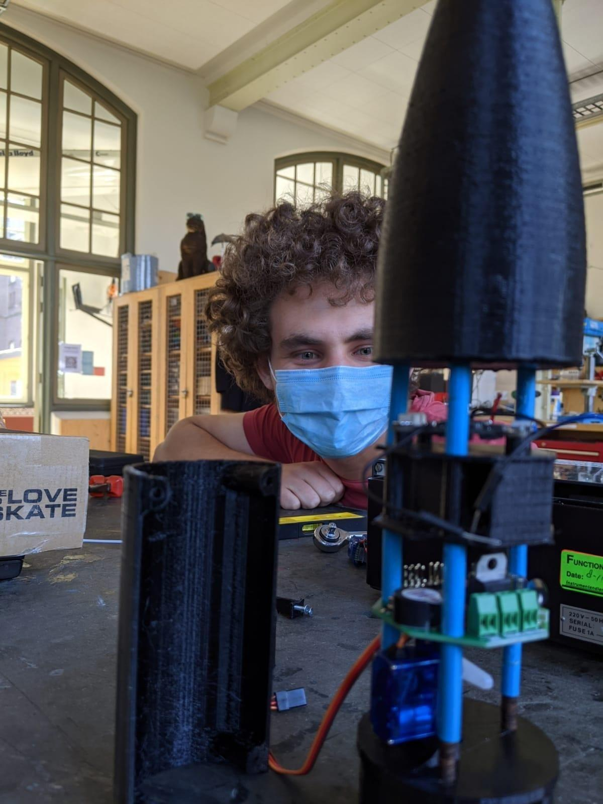

About us!
The most reliable way to contact us is via email. Our email address is werkplaatssc@gmail.com.
Visit us!
We are located inside the science centre at Mijnbouwstraat 120, 2628 RX Delft.
Upon entering the building, continue walking to the back of the hallway and turn right.
The inventory will be on the left hand side of the corridor.
| Monday-Friday |
8:00-22:00 |
| Saturday-Sunday |
10:00-18:00 |
Teun Verkerk
Roles:
I work on the intersection of art design and technology with special interest in new applications of digital technologies in public spaces.
This happens in many forms, namely in my own practice in design thinking, r&d and prototyping, the curation and initiation of projects such as HighLight and in the facilitation of collaborations in art and technology programmes and hackathons
such as Crossing Parallels and The Inventory.
By combining these different activities in different environments I am surrounded by people that work on innovative ideas and new technologies.
Learning from different backgrounds and perspectives helps me to work on cross-disciplinary projects involving multiple partners.
I believe a lot of people, professions, technology and sectors are currently converging to create a new society that will change our way of life.
Quinten Luyten
My tasks:
- Staff member
- Machine servicing
- 3D printer maintenance
- Inventory management
- Instructions
Full of energy and always willing to help you with questions, I am responsible for the maintenance of 3D printers and focus mainly on improving the workspace.
I also like to make sure that everyone knows as much about the machines as they can.
I study Electrical Engineering and have a lot of experience with 3D printing. My passions are electronics, rockets and machines.

I have a "just make it work" mindset. I like visualise the problem and get to work. Not only do I have experience maintaining and upgrading printers, I have also built my own 3d printer. I'm also a member of DARE. There are a lot of DARE members operating in the workspace
and I strive to be a bridge between the two organisations.
Contact me at werkplaatssc@gmail.com if you have ideas about improvements!
Tadjiro Velzel
My tasks:
- Staff member
- Web developer
- Inventory management
- Instructions
- Machine Calibration
My name is Tadjiro Velzel and I'm a second year electrical engineering student from Arnhem.
I built this website from scratch using HTML, CSS and JavaScript as one of my projects at the makerspace.
Any issues or suggestions regarding the moderation and maintenance of the site can be directly forwarded to my personal email address: tadjiro@velzel.com.
I studied performing arts in New York for two years. This passion of mine carried over into electrical engineering and fueled my interest in amplifier and acoustic design.
I also spend a lot of time programming and always have time to help you with any coding related questions. Combining aspects of electrical, computer science and mechanical engineering
is my favourite way to approach complex projects.